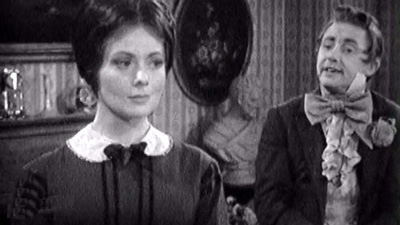
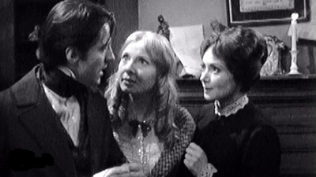
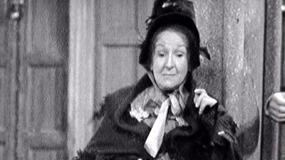
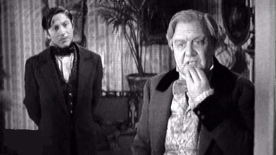
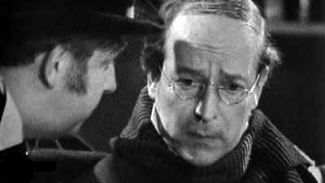

1959

CAST
Esther Summerson
-
Diana Fairfax
Richard Carstone
-
Colin Jeavons
John Jarndyce
-
Andrew Cruickshank
Lady Honoria Dedlock
-
Iris Russell
Ada Clare
-
Elizabeth Shepherd
William Guppy
-
Timothy Bateson
Mr Tulkinghorn
-
John Phillips
Mrs Rouncewell
-
Eileen Draycott
Mr Snagsby
-
Leslie French
Allan Woodcourt
-
Jerome Willis
Mr George
-
Michael Aldridge
Sir Leicester Dedlock
-
David Horne
Jo
-
Malcolm Knight
Inspector Bucket
-
Richard Pearson
Mademoiselle Hortense
-
Annette Carell
Charley
-
Angela Crow
Miss Flite
-
Nora Nicholson
Mr Vholes
-
Gerald Cross
Maid
-
Jean Theobald
Tony Jobling
-
Aubrey Woods
Krook
-
Wilfrid Brambell
Mr Kenge
-
William Mervyn
Mr Badger
-
Laurence Hardy
Mrs Badger
-
Fabia Drake
Servant
-
Michael Wells
Turnpike Keeper
-
Kenneth Adams
Stableman
-
Raymond Adamson
Jem
-
Kenneth Dight
Mrs Guppy
-
Gretchen Franklin
Phil Squod
-
Tex Fuller
Mr Chadband
-
Willoughby Goddard
Mrs Chadband
-
Anne Blake
Mrs Woodcourt
-
Noel Hood
Tom
-
James Langley
Lord Chancellor
-
Frederick Leister
Waggoner
-
Arnold Locke
Mrs Snagsby
-
Molly Lumley
Liz
-
Ruth Porcher
Brickmaker
-
John Ringham
Smallweed
-
Terence Soall
Mrs Smallweed
-
Ann Way
Mrs Blinder
-
Vi Stevens
Matthew Bagnet
-
Geoffrey Tyrrell
Mrs Bagnet
-
Megan Latimer
Constable
-
Meadows White
CREATIVE TEAM
Producer
-
Eric Tayler
Screenplay
-
Constance Cox
STILLS FROM 1959 ADAPTATION




